GridWorld#
- class magent2.gridworld.GridWorld(config: Config, **kwargs)#
The main MAgent2 class for implementing environments. MAgent2 environments are square Gridworlds wherein each coordinate may contain an agent, a wall, or nothing.
The class attributes are not accessible directly due to them living in the underlying C++ code. Thus, there are get/set methods for retrieving and manipulating their values.
Methods#
- magent2.gridworld.GridWorld.new_group(self, name: str) c_int#
Registers a new group of agents into environment.
- Parameters:
name (str) – Name of the group.
- Returns:
handle (ctypes.c_int32) – A handle to reference the group in future gets and sets.
- magent2.gridworld.GridWorld.add_agents(self, handle: c_int, method: str, **kwargs)#
Adds agents to environment.
- Parameters:
handle (ctypes.c_int32) – The handle of the group to which to add the agents.
method (str) – Can be ‘random’ or ‘custom’. If method is ‘random’, then kwargs[“n”] is a int. If method is ‘custom’, then kwargs[“pos”] is a list of coordination.
``` # add 1000 walls randomly >>> env.add_agents(handle, method=”random”, n=1000)
# add 3 agents to (1,2), (4,5) and (9, 8) in map >>> env.add_agents(handle, method=”custom”, pos=[(1,2), (4,5), (9,8)]) ```
- magent2.gridworld.GridWorld.add_walls(self, method: str, **kwargs)#
Adds walls to the environment.
- Parameters:
method (str) – Can be ‘random’ or ‘custom’. If method is ‘random’, then kwargs[“n”] is an int. If method is ‘custom’, then kwargs[“pos”] is a list of coordination
``` # add 1000 walls randomly >>> env.add_walls(method=”random”, n=1000)
# add 3 walls to (1,2), (4,5) and (9, 8) in map >>> env.add_walls(method=”custom”, pos=[(1,2), (4,5), (9,8)]) ```
- magent2.gridworld.GridWorld.reset(self)#
Resets the environment to an initial internal state.
- magent2.gridworld.GridWorld.set_action(self, handle: c_int, actions: ndarray)#
Set actions for whole group.
- Parameters:
handle (ctypes.c_int32) – Group handle.
actions (np.ndarray) – Array of actions, 1 per agent. The dtype must be int32.
- magent2.gridworld.GridWorld.step(self)#
Runs one timestep of the environment using the agents’ actions.
- Returns:
done (bool) – Flag indicating whether the game is done or not.
- magent2.gridworld.GridWorld.render(self)#
Renders a step.
- magent2.gridworld.GridWorld.set_seed(self, seed: int)#
Set random seed of the engine.
- Parameters:
seed (int) – Seed value.
- magent2.gridworld.GridWorld.set_render_dir(self, name: str)#
Sets the directory to save render file.
- Parameters:
name (str) – Name of render directory.
- magent2.gridworld.GridWorld.clear_dead(self)#
Clears dead agents in the engine. Must be called after step().
- magent2.gridworld.GridWorld.get_handles(self) list[ctypes.c_int]#
Returns all group handles in the environment.
- Returns:
handles (list[ctypes.c_int32]) – All group handles in the environment.
- magent2.gridworld.GridWorld.get_observation(self, handle: c_int) Tuple[ndarray, ndarray]#
Returns the observation for each agent in a group.
- Parameters:
handle (ctypes.c_int32) – Group handle.
- Returns:
obs (Tuple[np.ndarray, np.ndarray]) – (views, features) Views is a numpy array whose shape is n * view_width * view_height * n_channel. Features is a numpy array whose shape is n * feature_size. For agent i, (views[i], features[i]) is its observation at this step.
- magent2.gridworld.GridWorld.get_reward(self, handle: c_int) ndarray#
Returns the rewards for all agents in a group.
- Parameters:
handle (ctypes.c_int32) – Group handle.
- Returns:
rewards (np.ndarray[float32]) – Rewards for all agents in the group.
- magent2.gridworld.GridWorld.get_action_space(self, handle: c_int) Tuple[int]#
Returns the action space for a group.
- Parameters:
handle (ctypes.c_int32) – Group handle.
- Returns:
action_space (Tuple[int]) – Action space for the group.
- magent2.gridworld.GridWorld.get_view_space(self, handle: c_int) Tuple[int, int, int]#
Returns the view space for a group.
- Parameters:
handle (ctypes.c_int32) – Group handle.
- Returns:
view_space (Tuple[int, int, int]) – View space for the group.
- magent2.gridworld.GridWorld.get_feature_space(self, handle: c_int) Tuple[int]#
Returns the feature space for a group.
- Parameters:
handle (ctypes.c_int32) – Group handle.
- Returns:
feature_space (Tuple[int]) – Feature space for the group.
- magent2.gridworld.GridWorld.get_num(self, handle: c_int) int#
Returns the number of agents in a group.
- Parameters:
handle (ctypes.c_int32) – Group handle.
- Returns:
num (int) – Number of agents in the group.
- magent2.gridworld.GridWorld.get_agent_id(self, handle: c_int) ndarray#
Returns the ids of all agents in the group.
- Parameters:
handle (ctypes.c_int32) – Group handle.
- Returns:
ids (np.ndarray[int32]) – Ids of all agents in the group.
- magent2.gridworld.GridWorld.get_alive(self, handle: c_int) ndarray#
Returns the alive status of all agents in a group.
- Parameters:
handle (ctypes.c_int32) – Group handle.
- Returns:
alives (np.ndarray[bool]) – Whether the agents are alive or not.
- magent2.gridworld.GridWorld.get_pos(self, handle: c_int) ndarray#
Returns the positions of all agents in a group.
- Parameters:
handle (ctypes.c_int32) – Group handle.
- Returns:
pos (np.ndarray[int]) – The positions of all agents in the group. The shape is (n, 2).
- magent2.gridworld.GridWorld.get_view2attack(self, handle: c_int) Tuple[int, ndarray]#
Get a matrix with the same size of view_range. If element >= 0, then it is an attackable point, and the corresponding action number is the value of that element.
- Parameters:
handle (ctypes.c_int32) – Group handle.
- Returns:
attack_base (int) – Attack action base value.
buf (np.ndarray) – Map attack action into view.
- magent2.gridworld.GridWorld.get_global_minimap(self, height: int, width: int) ndarray#
Compress global map into a minimap of given size.
- Parameters:
height (int) – Height of minimap.
width (int) – Width of minimap.
- Returns:
minimap (np.ndarray) – Map of shape (n_group + 1, height, width).